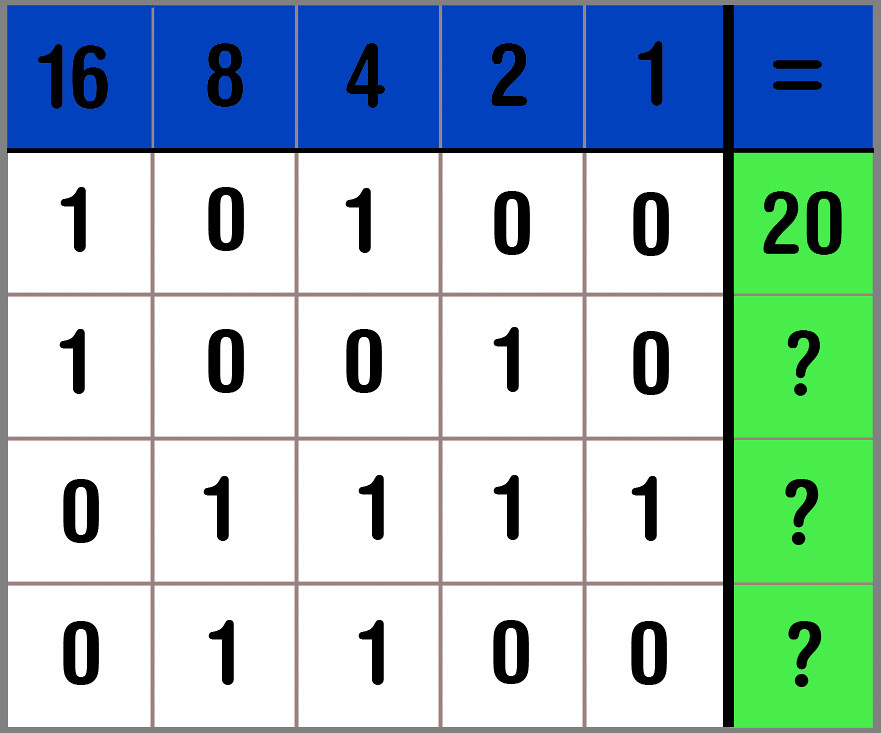

Het binaire stelsel, ook wel het binair talstelsel genoemd, is een systeem voor het representeren van getallen dat slechts twee verschillende symbolen gebruikt: 0 en 1. Dit is anders dan het decimale stelsel, dat we dagelijks gebruiken, dat tien verschillende symbolen gebruikt (0 tot 9).
Hier is een overzicht van het binaire stelsel:
-
Basisprincipes van het binaire stelsel
1. Cijfers: Het binaire stelsel gebruikt slechts twee cijfers: 0 en 1.
2. Plaatswaarde: Net als in het decimale stelsel, heeft elke positie in een binair getal een bepaalde waarde, maar in plaats van machten van 10, gebruikt het binaire stelsel machten van 2.
-

Voorbeeld van een binair getal
Neem bijvoorbeeld het binaire getal 1011. Om te begrijpen wat dit betekent, kunnen we het omzetten naar een decimaal getal door elke positie als een macht van 2 te beschouwen:
- De meest rechtse positie (de laatste 1) is 2 tot de macht 0 (1 in decimaal).
- De volgende positie naar links (de 1 voor de laatste) is 2 tot de macht 1 (2 in decimaal).
- De derde positie van rechts (0) is 2 tot de macht 2 (4 in decimaal), maar omdat er een 0 staat, draagt deze positie niets bij aan de uiteindelijke waarde.
- De vierde positie van rechts (de eerste 1) is 2 tot de macht 3 (8 in decimaal).
Nu tellen we deze waarden bij elkaar op:
1x2 tot de macht 3 + 0x2 tot de macht 2 + 1x2 tot de macht 1 + 1x2 tot de macht 0 = 11
Dus het binaire getal 1011 komt overeen met het decimale getal 11.
-
Omzetten tussen binaire en decimale stelsels
- Van binair naar decimaal: Zoals in het bovenstaande voorbeeld, vermenigvuldig je elke binaire cijfer met zijn overeenkomstige macht van 2 en tel je de resultaten op.
- Van decimaal naar binair: Dit doe je door herhaaldelijk te delen door 2 en de rest te noteren. De binaire getallen zijn dan de resten, gelezen van onder naar boven.
Laten we bijvoorbeeld het decimale getal 13 omzetten naar binair:
1. Deel 13 door 2: quotiënt = 6, rest = 1
2. Deel 6 door 2: quotiënt = 3, rest = 0
3. Deel 3 door 2: quotiënt = 1, rest = 1
4. Deel 1 door 2: quotiënt = 0, rest = 1
Lees nu de resten van onder naar boven: 1101. Dus het decimale getal 13 is 1101 in binair.
-
Toepassingen van het binaire stelsel
Het binaire stelsel is fundamenteel voor de werking van computers en digitale systemen. Computers gebruiken binaire getallen omdat hun schakelingen zich in twee toestanden kunnen bevinden: aan (1) en uit (0). Hierdoor kunnen zij efficiënter en betrouwbaarder gegevens verwerken en opslaan dan met een systeem met meer symbolen.